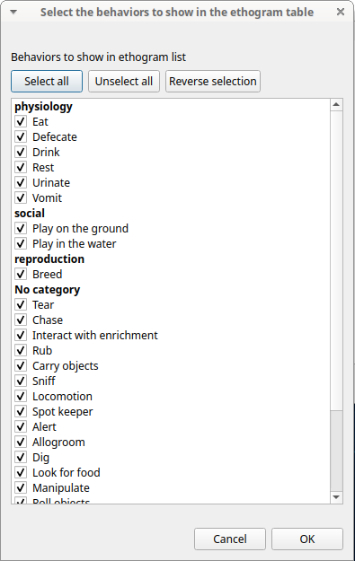
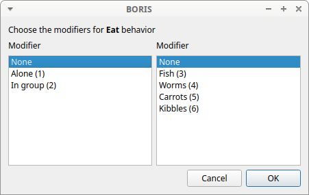
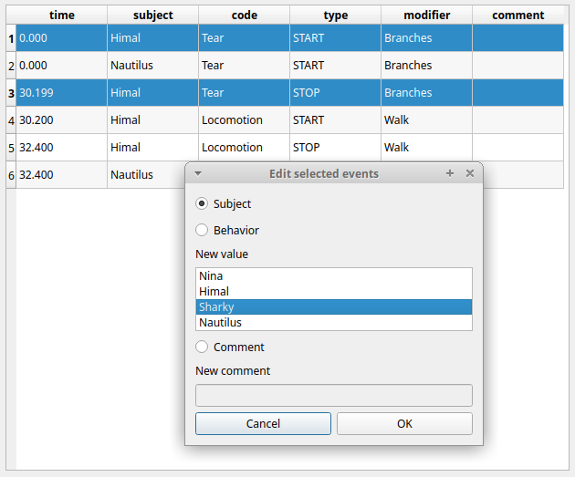
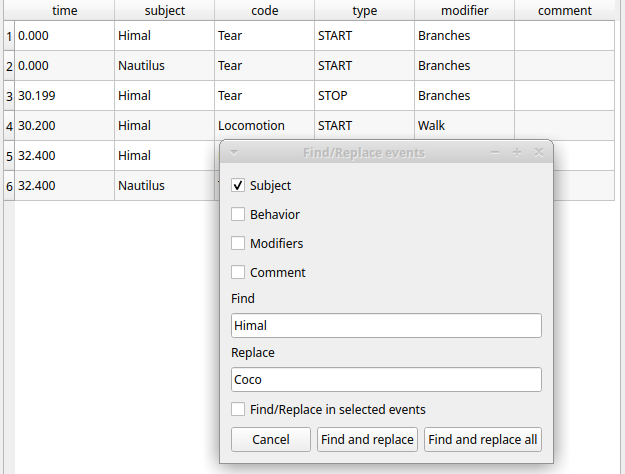

Coding#
When looking at the BORIS main window, the window title bar shows the Observation id - Project name - BORIS. The media (the first in the queue) will be loaded in the media player and paused.
Media based coding#
The toolbar#

List of observations
Play (become Pause when media is played)
Rewind reset your media at the beginning
Fast backward jumps for n seconds backward in your media (See preferences)
Fast forward jumps for n seconds forward in your media (See preferences)
Set the playback speed to 1x
Increase the playback speed (See preferences)
Decrease the playback speed (See preferences)
Jump to the previous media file
Jump to the next media file
Take a snapshot of current video or frame
Move on frame back
Move one frame forward
Close current observation
Real time plot of events
Time budget of the current observation
Plot events of the current observation
Plot the time budget of the current observation
Geometric measurements
Find in events
Explore project
Preferences
The media can also be controlled by special keyboard keys:
Page Up Switch to the next media
Page Down switch to the previous media
Up Jump forward in the current media
Down Jump backward in the current media
Home Increase the playback speed (See general preferences to set the step value)
End Decrease the playback speed (See general preferences to set the step value)
Backspace Set the playback speed to 1x
Left Go to the previous frame
Right Go to the next frame
Live observations#
During a live observation the media control toolbar is disabled.
Press the Start live observation button to start your observation. If some events are already coded BORIS will ask you for deleting them.
A timer will be displayed. The events will be recorded in the events widget.

Ethogram table in the main window#
The Ethogram widget provide the user with the list of behaviors defined in the Ethogram. It can be used to record an event by double clicking on the corresponding row. The Key column indicates the keyboard key assigned to each behavior (if any). Pressing a key will record the corresponding behavior (that will appear in the Events widget).
The behaviors shown in the ethogram widget can be filtered:
Right-click on ethogram widget > Filter behaviors
Check/Uncheck single behaviors or double-click on the behavioral category

Subjects table in the main window#

The Subjects widget provide the user with the list of subjects defined in the Subject tab in the Project window. It can be used to add information about the focal subject on the recorded behaviors by double clicking on the corresponding row. When a subject is selected his/her name appears above the media player. The Key column indicates the keyboard key assigned to each subject (if any).
The subjects shown in the subjects widget can be filtered:
Right-click on subjects widget > Filter subjects
Check/Uncheck the subjects to show/hide them on the subjects' table.
The media player widgets#

The media position can be set using the horizontal slide bar. Each media player has its own audio volume control (the vertical slide bar on the right side of the player).
The organization of the various widget can be customized:

The events table#
The events table shows all the recorded behaviors (events).
The displayed parameters (organized in columns) depend of the type of the observation:
Observation from media file#
The following paramters are displayed:
-
Time, the time at which the event occurred;
-
Frame index the frame index corresponding to the event;
-
Subject, the focal subject (if any);
-
Code, the behavior code;
-
Type, in case of a state event indicates whether the time corresponds to the start or to the stop. Empty for a point event;
-
Modifier, indicates the modifier(s) that was(ere) selected (if any);
-
Comment, is an open field where the user can add notes.
A tracking cursor (red triangle) will visualize the current event. This cursor can be positioned above the current event, see tracking cursor position option in Preferences window.
A double-click on a row will reposition the media player to the moment of the corresponding event. See Time offset for media reposition in Preferences window to customize the time offset for media repositioning.
Live observation#

The following paramters are displayed:
-
Time, the time at which the event occurred;
-
Subject, the focal subject (if any);
-
Code, the behavior code;
-
Type, in case of a state event indicates whether the time corresponds to the start or to the stop. Empty for a point event;
-
Modifier, indicates the modifier(s) that was(ere) selected (if any);
-
Comment, is an open field where the user can add notes.
Observation from pictures#
The following paramters are displayed:
-
Time, the time at which the event occurred;
-
Subject, the focal subject (if any);
-
Code, the behavior code;
-
Type, in case of a state event indicates whether the time corresponds to the start or to the stop. Empty for a point event;
-
Modifier, indicates the modifier(s) that was(ere) selected (if any);
-
Comment, is an open field where the user can add notes;
-
Image index, the image index (in the directory) corresponding to the event,
-
Image path, the path of the image corresponding to the event (can be relative or absolute).
To simplify the events table the relevant behaviors and subjects can be filtered see Filter events
Events#
Recording an event#
An event is a unique combination of a time, a subject and a behavior. If the subject is not set it will be No focal subject.
Once ready to begin your coding, you can start the media player using the Play button or the Space bar.
An event can be recorded by:
-
pressing the predefined key of the keyboard corresponding to the behavior to record.
-
double-clicking to the corresponding row in the Ethogram table.
-
using the Coding pad (See coding pad).
The focal subject can be selected by:
-
pressing the predefined key of the keyboard corresponding to the subject to select.
-
double-clicking to the corresponding row in the Subects table.
-
using the Subject pad (See subject pad).
If the pressed key defines a single event, the corresponding event will be recorded directly in the Events table. In the case you have specified the same key for two (or more) events (e.g. key d in the figure below), BORIS will prompt you for the desired behavior.
In the case you have specified modifiers (one or more sets), BORIS will prompt you for the desired modifier(s) if any (e.g. ball or opponent in the figure below). You can select the modifiers using the mouse or the keyboard (1, 2, 3, 4, 5 or 6 key)

If no keys are defined for the modifier selection, you can type the first character of the modifier and use the Up arrow and Down arrow keyboard keys to select the correct modifier.
In the case your behavior type is a Point event with coding map or a State event with coding map, BORIS will show the Coding map window and will allow selecting the desired area(s). In case you click a part of the map in which two (or more) areas overlap, the corresponding codes will be recorded.
A recorded event can be edited (once selected) using the Observations > Edit event menu option. The resulting Edit event parameters allows modifying every parameter (e.g. time, subject, code, modifiers, and comment).
The Observations > Add event menu option allows adding a new event by specifying its time and the other parameters.
The Events table context menu#
Some functions are available in the Events table context menu. Righ-click on the Events table and the menu will pop-up.
The various functions available in the menu are described below. The same functions and others are available in the Observations menu.
Undo an even recording#
A wrong event can be removed from the events list using the Undo function (Ctrl+Z). You can go back till 25 events recorded events.
Add event#
This option allows adding a new event by specifying its time and the other parameters.

Select a time format and imput the time value.
Select the subject from the drop-down menu or leave empty for No focal subject.
Select the behavior from the drop-down menu.
Edit selected event(s)#
This option allows to edit the selected event(s). When many events are selected you have to choose the field to edit between Subject, Behavior and Comment. In this case the new value will apply to all selected events.

Edit time of selected event(s)#
This option allows to add or subtract a time value (in seconds) to all selected events. For subtracting a value use a negative value.
Copy events#
This option allows to copy the selected events in the clipboard. The clipboard will contain the values of the selected events (except the type field) separated by a <TAB> character. The copied values are: Time, Subject, Behavior, Modifier(s), Frame index
Example of clipboard content:
8.253 Himal Locomotion Run 207
8.329 Nautilus Locomotion Run 209
10.400 Sharky Swim 260
11.778 Himal Locomotion Run 295
12.778 Nina Alert 320
13.788 Nautilus Locomotion Run 345
13.789 Nautilus Locomotion Walk 345
14.348 Himal Locomotion Jump 359
14.660 Nina Alert 367
14.865 Nautilus Locomotion Walk 372
14.865 Nautilus Locomotion Jump 372
15.000 Nina Rest 375
16.466 Himal Locomotion Jump 412
16.467 Himal Alert 412
23.600 Nautilus Locomotion Jump 590
23.600 Nautilus Rest 590
24.228 Nautilus Rest 606
24.407 Himal Alert 611
24.917 Himal Locomotion Walk 623
39.682 Nautilus Locomotion Run 992
40.549 Nina Rest 1014
42.313 Nautilus Locomotion Run 1058
42.314 Nautilus Rest 1058
44.759 Himal Locomotion Walk 1119
44.761 Himal Allogroom 1119
48.219 Nautilus Rest 1206
48.363 Himal Allogroom 1209
48.365 Himal Locomotion Walk 1209
49.274 Himal Locomotion Walk 1232
49.274 Himal Drink 1232
50.408 Himal Drink 1261
50.408 Himal Swim 1261
58.851 Sharky Swim 1472
58.950 Himal Swim 1474
Paste events#
This option allows to paste the clipboard content into the events table. The clipboard must respect the format described in the previous section: 5 columns separated by a <TAB> character.
Find in events#
This option allows to search for a string in the various field of events. Select the fields to be searched. The find/replace operation can be restricted to the selected events.

Find/Replace in events#
This option allows to search for a string and replace it by a new value in the various field of events. Select the fields to be searched. The find operation can be restricted to the selected events.

Filter events#
This option allows to filter the events by field value (Subject and Behavior).

Show all events#
This option reverts the previous one and allows to visualize all coded events.
Check state events#
This option allows to check if the state events are PAIRED, if they have a START and a STOP occurences.
Delete selected events#
This option allows to delete the selected events. This operation is irreversible!
Delete all events#
This option is not present in the context menu but only in the main menu (Observations > Delete all events).
This option allows to delete all then events in the current observation. This operation is irreversible!
Fix unpaired state#
You can use the Fix unpaired events function to fix the state events without a STOP event.
Observations > Fix unpaired events (keyboard shortcut: Ctrl+U)
The program will ask for a time at which insert the STOP events for all unpaired state events
This function can be run on a set of selected observations (when no observation is open). In this case the STOP events will be inserted at the end of observation.
Add frame indexes#
This function can be used for the observations from a video. The frame index corresponding to the coded events will be added in the events table.
Run external program with selected events#
This function is not yet implemented.
Explore project#
You can search information in various fields in all observations in the current project (Observations > Explore project).
The searchable fields are: subject, behavior, modifier and comment.
If more than one field is searched a logic AND will apply.

The events that were found are listed in a table. By double-clicking on the row the corresponding observation will be opened and the visualization will be scrolled to the row corresponding to the event.

Frame-by-frame mode#
You can switch between the media player and the frame-by-frame mode using the arrow buttons in the toolbar:
In frame-by-frame mode the video will stop playing and the user will visualize the video frame by frame.
Note
Some video files should be re-encoded to be used in frame-by-frame mode. Otherwise the extracted frames are not reliable or it will not be possible to move backward.
You can move between frames by using the arrow keys in the toolbar (on the right) or by using keyboard special keys:
Left Go to the previous frame
Right Go to the next frame
Page Up Switch to the next media
Page Up Switch to the previous media
Up Jump forward in the current media
Down Jump backward in the current media
If you have a numeric keypad you can use the following keys in alternative:
- The key / will allow you to view the previous frame
- The key * will allow you to view the next frame
To return in the media player mode press the Play button in the toolbar.